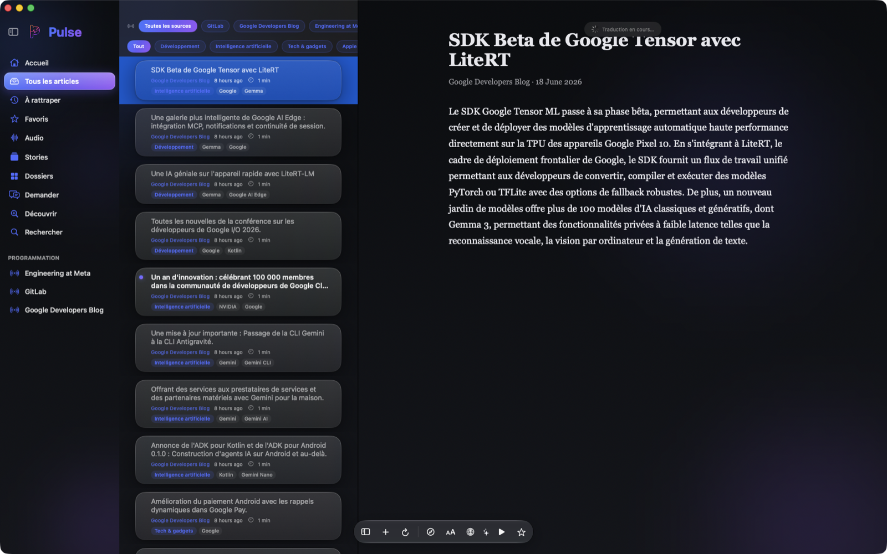
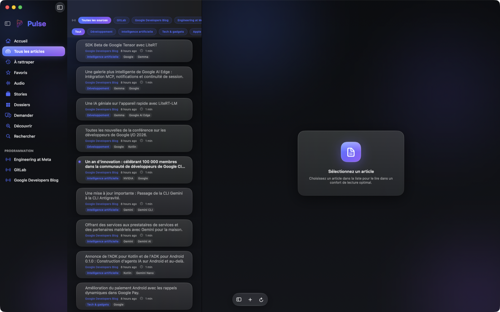
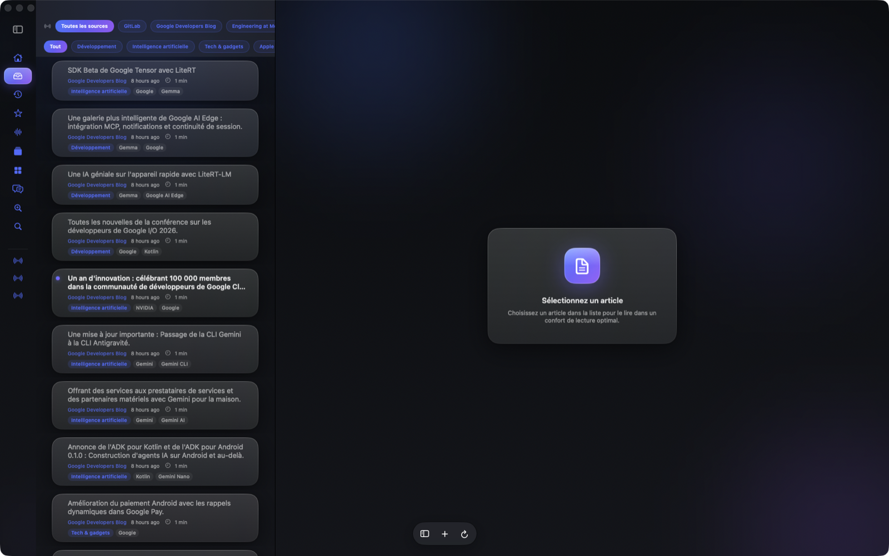
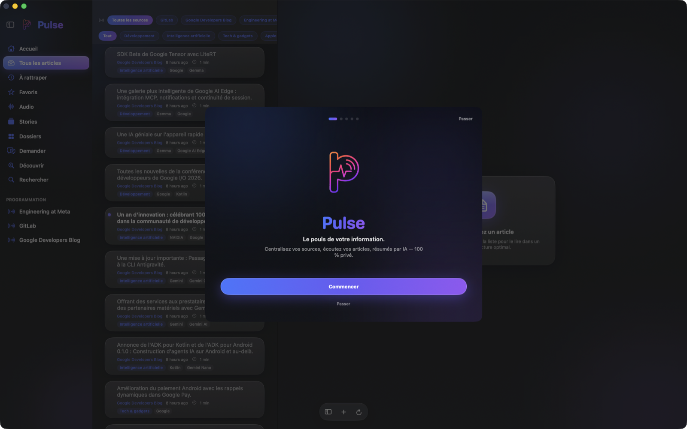

✦
Résumés par IA
Résumés par IA en plusieurs styles, sur l'appareil.
Un lecteur RSS premium qui lit, résume et raconte l'actualité à votre place.
Gratuit · Aucune donnée envoyée sans votre accord

Des outils d'IA modernes au service d'une lecture calme et rapide.
Résumés par IA en plusieurs styles, sur l'appareil.
Voix neuronales naturelles avec surlignage karaoké.
Un vrai JT de vos sources, durée réglable, format dialogue.
Traduction du texte complet, mise en cache.
Classement par thème persistant, sans recalcul.
Dock contextuel flottant, barre latérale en rail d'icônes.
Annuaire RSS, YouTube, Reddit, Mastodon et podcasts.
Traitement local ; clés dans le Trousseau.
Pré-extraction des articles récents pour l'hors-ligne.

Filtrez par source ou par thème en un geste.

La barre latérale se réduit à un rail d'icônes.
Le dock flottant se transforme selon le contexte.
Choisissez votre langue, vos centres d'intérêt, et laissez Pulse vous proposer des flux de qualité.

Distribué en dehors de l'App Store. Choisissez votre plateforme.
Seules les versions compilées sont publiées publiquement.